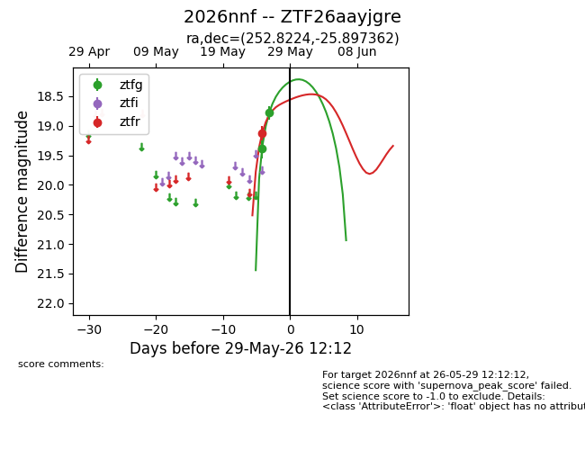
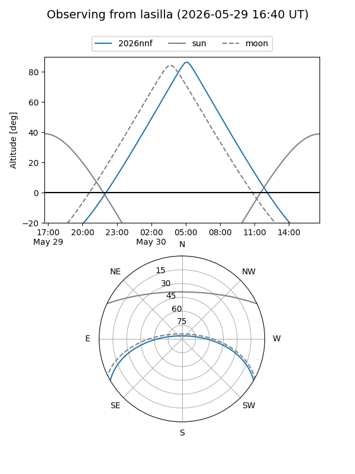
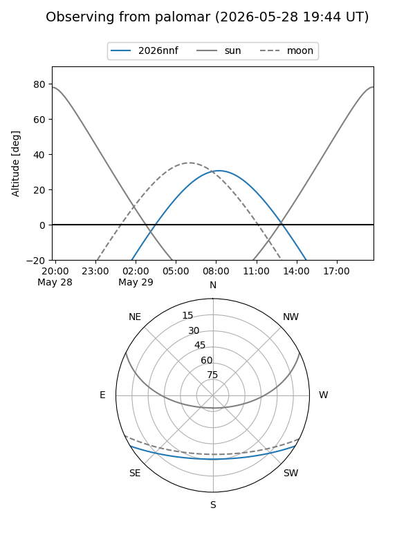
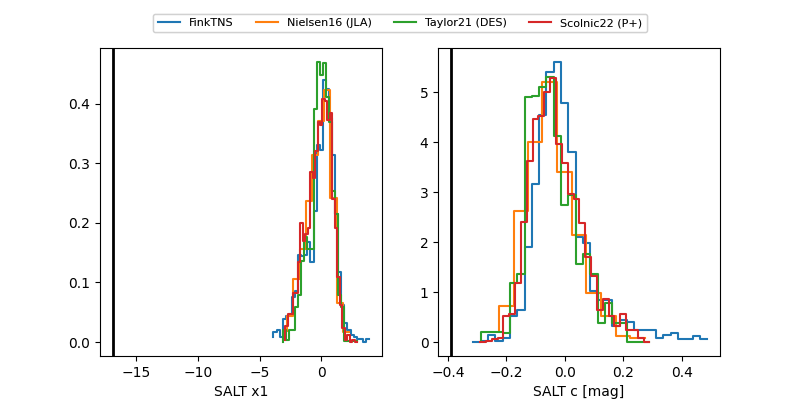

2026nnf
Target 2026nnf at 2026-05-29 12:16
Aliases and brokers:
lsst-FINK: link
lsst-Lasair: link
lsst-ALeRCE: link
ztf-FINK: link
ztf-Lasair: link
ztf-ALeRCE: link
TNS: link
YSE: link
alt names
ZTF26aayjgre (ztf,fink_ztf)
2026nnf (tns,yse)
Coordinates:
equatorial (ra, dec) = 252.8224,-25.89736
equatorial (HMS+DMS) = 16:51:17.38,-25:53:50.50
galactic (l, b) = (355.5958,+11.63052)
Flags:
TNS confirmed: nan
Photometry:
last ztfg=18.78, ztfr=19.13
2 ztfg, 1 ztfr detections
Lightcurve

Visibility


Additional plots
